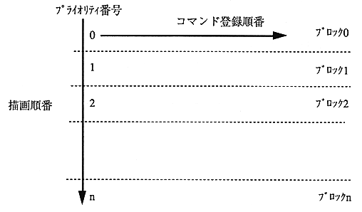

.
SPR_2LocalCoord() SPR_2SysClip() SPR_2UserClip() SPR_2line() SPR_2polyLine() SPR_2Polygon() SPR_2NormSpr() SPR_2ScaleSpr() SPR_2DistSpr() SPR_2Cmd()
The

The drawing order is set when calling the SPR_2CloseCommand () and SPR_2FlushDrawPrty () routines. The control word jump specification and link specification word in the command are changed.
The number of blocks for drawing order management is specified in advance in the 2D work area definition. Set drawing priority
If you don't want to do it, you can specify it with 2D work area definition and SPR_2OpenCommand ().